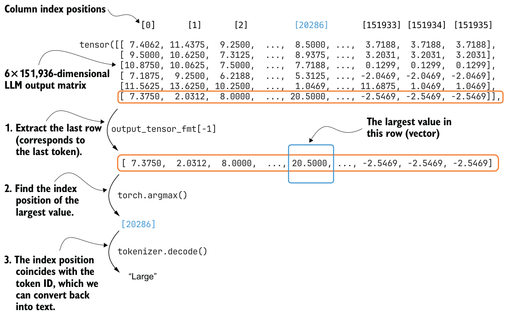

Squeezing and unsqueezing tensors
.squeeze() and .unsqueeze() operations in PyTorch are used to change the shape of a tensor by removing or adding dimensions of size 1. This is often useful for reshaping a tensor to match what a model expects. For example, a model might expect input tensors with two dimensions (e.g., rows and columns) so it can process batches of inputs (see appendix E). But if the input is just a row vector, we can use.unsqueeze(0) to add an extra dimension and make it compatible:example = torch.tensor([1, 2, 3])
print(example)
print(example.unsqueeze(0))tensor([1, 2, 3])
tensor([[1, 2, 3]]).unsqueeze(0) adds a new dimension at position 0, turning a 1D tensor into a 2D tensor with shape (1, 3). Conversely, .squeeze(0) removes a dimension of size 1 from position 0:example = torch.tensor([[1, 2, 3]])
print(example)
print(example.squeeze(0))tensor([[1, 2, 3]])
tensor([1, 2, 3])To get the next generated word, we extract the last row of this 6×151,936-dimensional matrix, find the token ID corresponding to the largest score value in this row, and convert this token ID back into text via the tokenizer, as illustrated in figure 2.12.

Let’s see how we can convert the LLM output matrix into the generated text token (shown in figure 2.12) in code.
Note that for text generation we run the model in inference mode rather than training mode, so PyTorch does not need to track gradients. As shown in figure 2.11, the earlier positions correspond to predictions for tokens that are already inside the prompt. Only the last position predicts the next unseen token that we want to append, which we can obtain via the [-1] index:
last_token = output_tensor_fmt[-1]
print(last_token)Using torch.inference_mode() in the previous step avoids storing gradient information that we do not need during generation. This reduces memory usage and usually improves speed.
This prints the 151,936 values corresponding to the last token:
tensor([ 7.3750, 2.0312, 8.0000, ..., -2.5469, -2.5469, -2.5469],
dtype=torch.bfloat16)The dtype=torch.bfloat16 suffix indicates that these scores are stored in bfloat16, a reduced-precision format commonly used to lower memory usage and improve efficiency in LLM inference. Depending on your hardware and settings, you may instead see a different dtype.
Then, we can use the argmax function to obtain the position with the largest value score (value) in this tensor:
print(torch.argmax(last_token, dim=-1, keepdim=True))The result is
tensor([20286])This returned integer value is the position of the largest value in this vector, and it also corresponds to the token ID of the generated token (last_token), which we can translate back into text via the tokenizer:
print(tokenizer.decode([20286]))This prints the generated token:
Largemax vs. argmax
max and argmax work and how they differ, since we will use torch.argmax() later when we select the next token when implementing the text generation function. In this chapter, using argmax corresponds to greedy decoding, where we always pick the single highest-scoring next token. We will discuss alternatives to this later in the book. The torch.max() function returns the largest value in a tensor, whereas torch.argmax() returns the index of that value. For example: example = torch.tensor([-2, 1, 3, 1])
print(torch.max(example))
print(torch.argmax(example))tensor(3)
tensor(2)keepdim=True with torch.argmax() to keep the output shape consistent by retaining the reduced dimension: print(torch.argmax(example, keepdim=True))tensor([2])keepdim=True keeps the result as a 1D tensor with the same number of dimensions as the input, which can be helpful for keeping the shape required by the tokenizer and for concatenation later on in our text generation function. To recap, figure 2.10 illustrated the iterative (autoregressive) text generation process in an LLM. Then, figure 2.11 zooms in on one of the iterations in this process. Figure 2.12 then further zooms in on this one iteration and shows how the score matrix (output by an LLM), gets converted into a token ID (and its corresponding text representation).
While we have seen how to use the LLM to generate a single token, in the next section, we will put these concepts into action and implement a function that applies this concept sequentially to generate coherent output text.